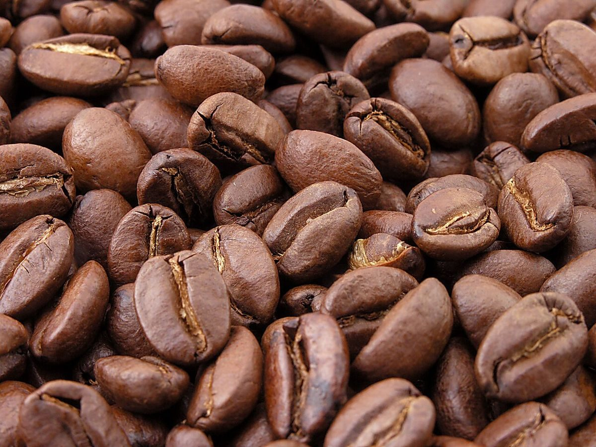
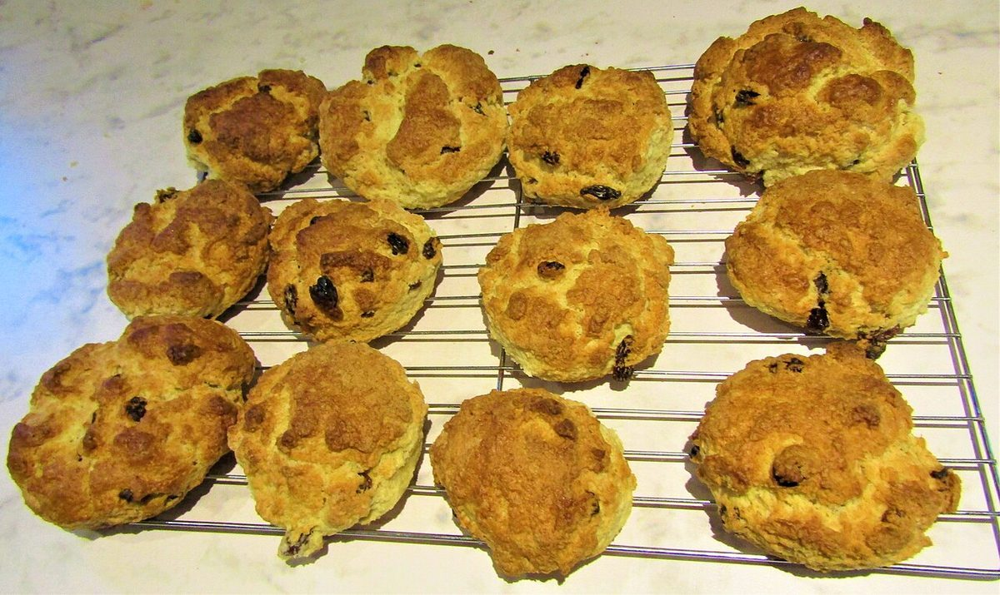
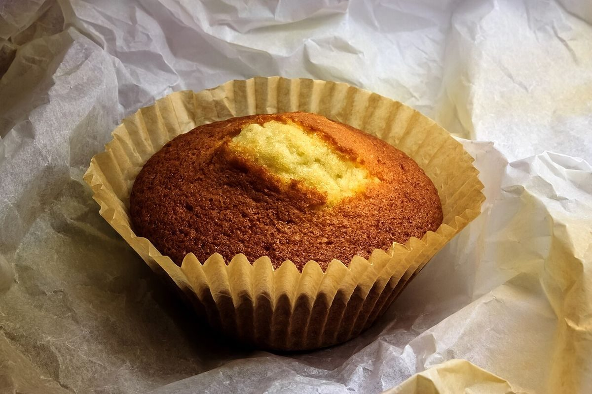
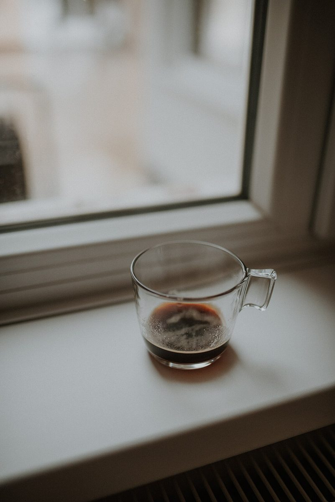
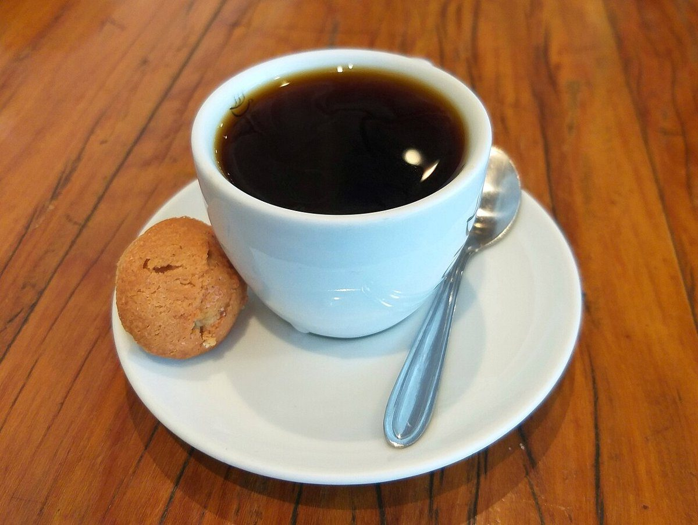
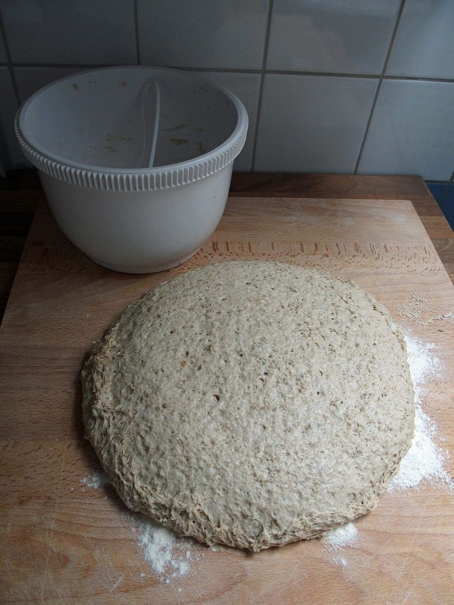

カフェ / 秋田県男鹿市
P→Z
秋田県男鹿市にあるカフェ「PZ」のご案内ページです。営業時間やメニューなど、詳しいことは準備中。まずはInstagramをのぞいてみてください。

制作側の連想
PからZまで、十一文字。
「PZ」という屋号の由来は分かりません。制作側は、アルファベットのPからZまでが、ちょうど十一文字あることに気づきました。そこでこのページは、PからZまでの頭文字ごとに写真を一枚ずつ並べる作りにしています。制作側の連想で、お店の理念・由来とは無関係です。
写真はお店のものではありません。国外または撮影地不明のフリー素材を、頭文字のイメージで選んでいます。
- PPastry
ぺいすとりー
焼き菓子やパンの頭文字。PZのPでもあります。お店に並ぶかどうかは分かりません。

撮影地不明のイメージ - QQuiet
くわいえっと
静かな一杯、という連想。白いテーブルにカップがひとつだけの写真を選びました。

撮影地不明のイメージ - RRoast
ろーすと
豆を焙る、のR。コーヒーの話題になると、まずこの字が思い浮かびました。

撮影地不明のイメージ - SScone
すこーん
網の上で冷ます焼き菓子の写真です。お店で出すものとは関係ありません。

国外のイメージ(英国) - TTop view
とっぷびゅー
真上から眺めたカップ。丸いものを上から見ると、Oの字にも見えてきます。

国外のイメージ(バングラデシュ) - UUmber
あんばー
アンバーは赤茶色のこと。挽いたコーヒーの色から連想しました。

撮影地不明のイメージ - VVanilla
ばにら
バニラの香りを連想して選んだ焼き菓子の写真です。

国外のイメージ(スウェーデン) - WWindow
うぃんどう
窓辺のグラスの写真です。PZの様子ではありません。

撮影地不明のイメージ - XeXtra
えくすとら
Xの付く言葉は少なめです。そこで「おまけ」のeXtraにしました。カップに小さなビスケットが添えられた写真です。

撮影地不明のイメージ - YYeast
いーすと
ふくらむ生地の写真から、イースト(酵母)を連想しました。

撮影地不明のイメージ - ZZest
ぜすと
ゼストは柑橘の皮のこと。最後の文字は、黄色い実で締めました。

国外のイメージ(ネパール)
ご案内
お店のこと(確認できたものだけ)
| 所在地 | 〒010-0511 秋田県男鹿市船川港船川化世沢175-11 |
|---|---|
| 電話 | 050-1792-0429 |
| 営業時間 | 準備中 |
| 定休日 | 準備中 |
| ご予約 | 準備中 |
| 駐車場 | 準備中 |
| SNS | Instagram @pz_oga |